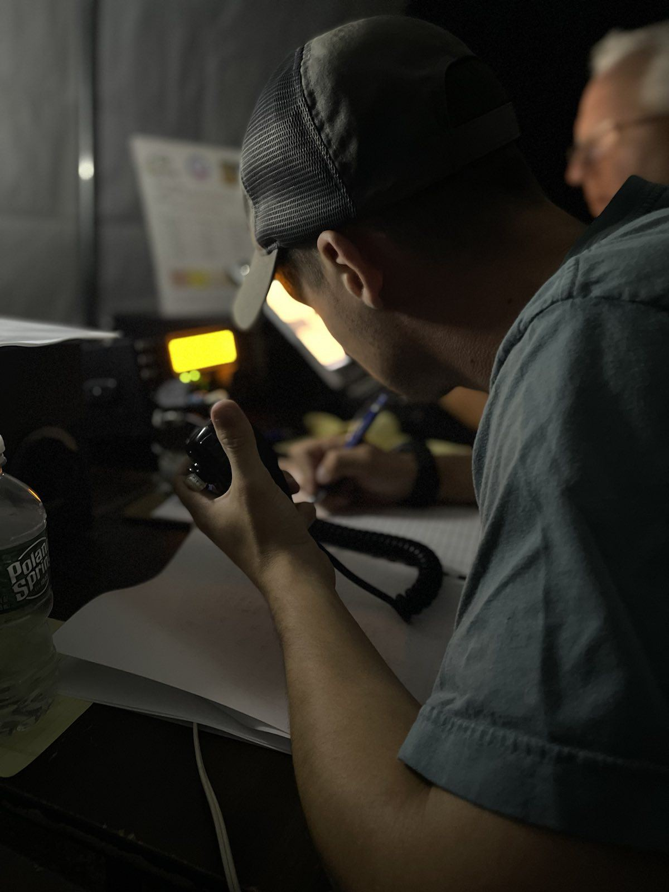
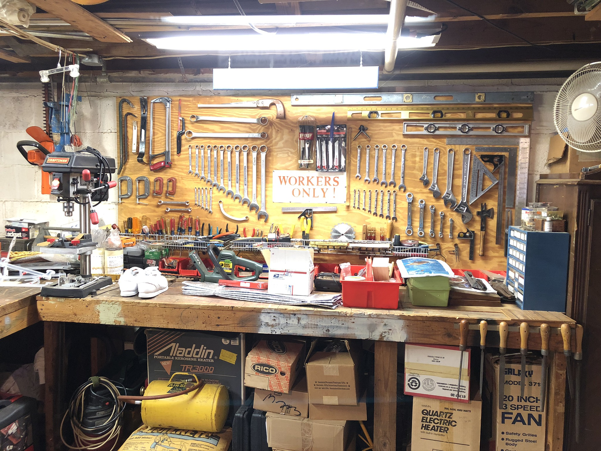

About Me
Welcome to Ivan's Workspace! This website is a collection of all my hobbies and projects that I like to work on. Think of this as my online journal!

From the mountains of Virginia, where self-reliance is a way of life, to a career in cybersecurity, my path has been driven by a constant desire to learn and build. I'm a U.S. Navy Veteran, a Sonar Technician by trade, and now a professional in the cybersecurity field. But my true passions lie in the workshop. I have fond memories of helping my dad work on his trucks (even though he still says I can't hold a flashlight right) and learning the name of every tool on my grandpa's workbench. These experiences taught me to be a tinkerer and a problem-solver.
I built this website as a public journal for my projects and hobbies—a place to share my journey without the noise of social media platforms. My hope is that my work inspires you to start a new project, finish an old one, or just learn a little something along the way.

I want to give a shout-out to the Operational Sciences Group (OSG), a group of friends from my time in the Navy. Their shared curiosity and unmatched life experience pushed me to be more. They always championed further education and experimentation, shaping me into the person I am today. Thank you, guys.

This website is operated by a WikiGnome. This page will remain ad-free!